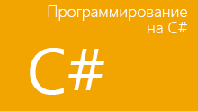

Замечательное письмо
Добрый день, Андрей
Отправляю тебе письмо, в котором хочу рассказать:
Отправить на почту ссылка
Мороз и солнце; день чудесный!
Еще ты дремлешь, друг прелестный -
Пора, красавица, проснись:
Открой сомкнуты негой взоры
Навстречу северной Авроры,
Звездою севера явись!
Вечор, ты помнишь, вьюга злилась,
На мутном небе мгла носилась;
Луна, как бледное пятно,
Сквозь тучи мрачные желтела,
И ты печальная сидела -
А нынче... погляди в окно:
Под голубыми небесами
Великолепными коврами,
Блестя на солнце, снег лежит;
Прозрачный лес один чернеет,
И ель сквозь иней зеленеет,
И речка подо льдом блестит.
Вся комната янтарным блеском
Озарена. Веселым треском
Трещит затопленная печь.
Приятно думать у лежанки.
Но знаешь: не велеть ли в санки
Кобылку бурую запречь?
Скользя по утреннему снегу,
Друг милый, предадимся бегу
Нетерпеливого коня
И навестим поля пустые,
Леса, недавно столь густые,
И берег, милый для меня.
Для любого натурального числа n > 2 уравнение
an+bn=cn
не имеет натуральных решений a, b и c.
 C# (произносится си-шарп) — объектно-ориентированный язык программирования. Разработан в 1998—2001 годах группой инженеров под руководством Андерса Хейлсберга в компании Microsoft как язык разработки приложений для платформы Microsoft .NET Framework и впоследствии был стандартизирован.
C# относится к семье языков с C-подобным синтаксисом, из них его синтаксис наиболее близок к C++ и Java. Язык имеет статическую типизацию, поддерживает полиморфизм, перегрузку операторов (в том числе операторов явного и неявного приведения типа), делегаты, атрибуты, события, свойства, обобщённые типы и методы, итераторы, «анонимные» функции с поддержкой замыканий, LINQ, исключения,комментарии в формате XML.